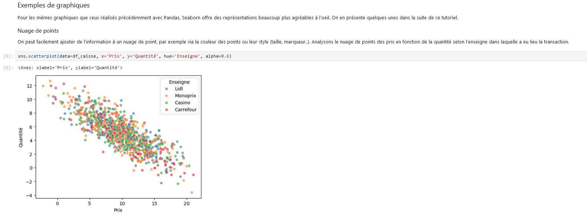

Formation d’initiation à Python dans le SSP
Contexte
But de la formation
La formation SSPy propose une introduction à l’utilisation de Python dans le cadre des projet statistiques. Elle est particulièrement pensée pour les agents du service statistique public (SSP), avec des applications faisant intervenir dans la mesure du possible des données issues de la statistique publique française. Néanmoins, ses supports sont complètement open-source (dépôt GitHub) et elle peut donc être ré-utilisée dans n’importe quel cadre de formation à Python.
Python en résumé
Python, créé par le développeur néerlandais Guido van Rossum en 1991, est un langage de programmation dit de haut niveau connu pour sa syntaxe simple et lisible. Les principes fondateurs du langage sont résumés dans un manifeste appelé “Zen de Python”. Python est un langage particulièrement versatile, dans la mesure où il dispose d’une riche bibliothèque de packages et fédère des communautés diverses, le rendant idéal pour de nombreux domaines d’application.
Pourquoi se former à Python ?
Malgré déjà plus de 30 années d’existence, Python reste un langage extrêmement dynamique. Plus que cela : non seulement fait-il déjà partie des langages les plus populaires, mais il est également celui qui connaît la plus forte croissance en termes de nombre d’utilisateurs d’année en année.

Une des principales raison de cette forte croissance actuelle est la montée en puissance du domaine de la data science, au sein duquel Python s’est progressivement imposé comme le langage central. De nombreuses librairies phares dans le domaine de la manipulation de données, de la datavisualisation, du machine learning et du déploiement applicatif sont disponibles en Python. Cette adoption croissante dans divers secteurs en fait un choix privilégié pour unifier les pratiques via un langage commun, s’appliquant aussi bien aux métiers de la data science, au développement, qu’à la production informatique et statistique.

Source : josephsalmon.eu
Python vs. R
Python et R sont souvent comparés en raison de leur large utilisation dans le domaine statistique. La différence fondamentale est que Python est un langage généraliste, tandis que R est spécifiquement orienté vers les statistiques. Néanmoins, en pratique, ils sont plutôt complémentaires que concurrents, et le choix entre les deux va souvent dépendre du cas d’usage : par exemple, là où l’éco-système du tidyverse en R n’a sans doute pas d’égal pour la manipulation de données, l’éco-système qui s’est développé en Python autour des techniques de machine learning (en particulier le package scikit-learn) ne possède pas d’équivalent direct dans le monde R. Enfin, les deux langages se ressemblent et la transition d’un langage à l’autre est donc accessible sans nécessiter un ré-apprentissage complet et coûteux.
Modalités de formation
Une “e-formation tutorée”
Cette formation adopte un format d’e-formation tutorée. Elle se déroule sur une période étendue (plusieurs mois), avec un accent mis sur la pédagogie pratique. Un tutorat est également disponible via un Canal Tchap, où les participants peuvent poser leurs questions en continu, ainsi que lors de sessions de visioconférence périodiques.
Hébergée sur le SSP Cloud
La formation est hébergée sur la plateforme SSP Cloud développée par l’Insee. Cette plateforme, dédiée à l’expérimentation autour de la data science et au travail sur des données ouvertes, offre un environnement particulièrement adapté à la formation avec des environnements pré-configurés disposant de toute la puissance de calcul nécessaire à des traitements statistiques courants et innovants.
Programme de la formation
Le programme de la formation est divisé en trois grandes parties :
fondamentaux du langage
Python: types de base, structures de données, instructions conditionnelles, fonctions, et une introduction à la programmation orientée-objet enPython;manipulation de données : manipulation de fichiers, travail avec des fichiers
CSVetJSON, calcul numérique avecNumPy, traitement des données tabulaires avecPandas, et une introduction à la visuation de données enPython;projets d’application : construction d’un jeu de Puissance 4, prédictions météorologiques à l’aide de données issues d’API, et analyse du recensement de la population.
Chaque chapitre se termine sur une série d’exercices guidés qui visent à mettre en application directe les concepts étudiés dans le chapitre. Les projets d’application sont quant à eux plus exploratoires, et visent à mettre en application les concepts étudiés tout au long de la formation sur des cas d’usage réalistes.
En pratique
Les notebooks Jupyter
La formation utilise le format de notebook interactif Jupyter, combinant du texte au format Markdown, du code Python, et du code HTML pour les visualisations et animations. Ce format est particulièrement adapté à la formation et aux phases d’expérimentation. Il permet par ailleurs de publier simplement à la fois les notebooks d’exercices et le site associé au cours.

Lancer un chapitre
Les notebooks associés aux différents chapitres peuvent ensuite être lancés en un clic depuis l’espace formation du SSP Cloud.

FAQ
Accès aux supports
Tous les supports de formation restent accessibles sur le SSP Cloud après la formation. Le code qui génère les supports est disponible sur GitHub.
Après la formation ?
Pour approfondir vos connaissances, vous pouvez poursuivre avec la formation “Python pour la data science” de l’ENSAE, disponible sur le SSP Cloud. Pour ceux intéressés par l’algorithmie, “Advent of Code”
Comment résoudre les erreurs ?
La survenue d’erreurs est tout à fait naturelle et attendue lors de l’apprentissage (et même après !) d’un langage informatique. La résolution de ces erreurs est vraiment l’occasion de comprendre comment fonctionne le langage et de devenir autonome dans sa pratique de celui-ci. Voici une proposition d’étapes à suivre (dans cet ordre) pour résoudre une erreur :
1/ Bien lire les logs, i.e. les sorties renvoyées par
Pythonen cas d’erreur. Souvent, elles sont informatives et peuvent contenir directement la réponse.2/ Chercher sur internet (de préférence en Anglais et sur
Google). Par exemple, donner le nom de l’erreur et une partie informative du message d’erreur renvoyé parPythonpermet généralement de bien orienter les résultats vers ce que l’on cherche.3/ Souvent, la recherche amènera vers le forum Stackoverflow, destiné à cet usage. Si l’on ne trouve vraiment pas la réponse à son problème, on peut poster sur
Stackoverflowen détaillant bien le problème rencontré de sorte à ce que les utilisateurs du forum puissent le reproduire et trouver une solution.4/ Les documentations officielles (de
Pythonet des différents packages) sont souvent un peu arides, mais généralement exhaustives. Elles permettent notamment de bien comprendre la manière d’utiliser les différents objets. Par exemple pour les fonctions : ce qu’elles attendent en entrée, les paramètres et leur type, ce qu’elles renvoient en sortie, etc.